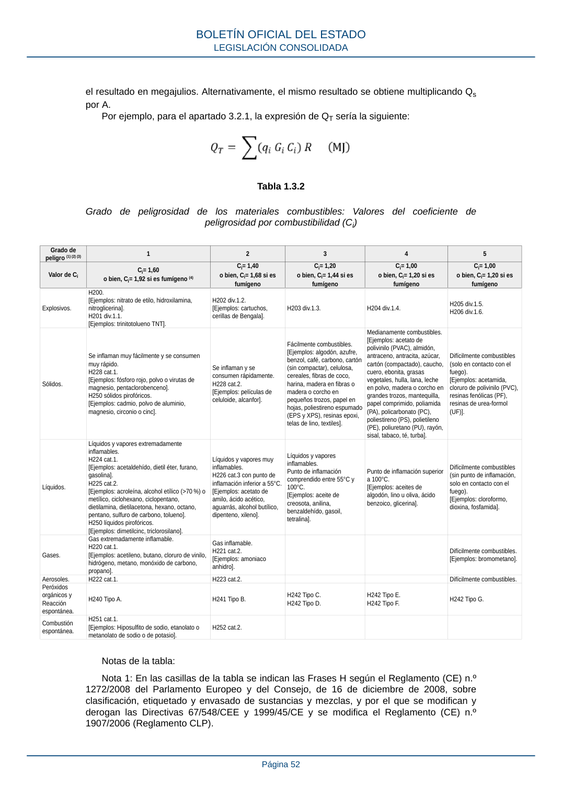

RSCIEI · Fragmento de PDF p52 · versión 2025-04-10 · capa asociada
Formatos: JSON compacto · Markdown · PDF fuente
Ámbito del documento · texto del ámbito · documento y tablas
ID técnico a0111 · PDF pág. 52 · jerarquía no validada por persona · no es capítulo: sin_linea_de_encabezado · padre: raíz · literal original en el contenido: «Grado de peligrosidad de los materiales combustibles: Valores del coeficiente de peligrosidad por combustibilidad (Ci)»
Grado de peligrosidad de los materiales combustibles: Valores del coeficiente de peligrosidad por combustibilidad (Ci) peligrosidad por combustibilidad (Ci) Grado de peligro (1) (2) (3) 1 2 3 4 5 Valor de Ci Ci= 1,60 o bien, Ci= 1,92 si es fumígeno (4) Ci= 1,40 o bien, Ci= 1,68 si es fumígeno Ci= 1,20 o bien, Ci= 1,44 si es fumígeno Ci= 1,00 o bien, Ci= 1,20 si es fumígeno Ci= 1,00 o bien, Ci= 1,20 si es fumígeno Explosivos. H200. [Ejemplos: nitrato de etilo, hidroxilamina, nitroglicerina]. H201 div.1.1. [Ejemplos: trinitotolueno TNT]. H202 div.1.2. [Ejemplos: cartuchos, cerillas de Bengala]. H203 div.1.3. H204 div.1.4. H205 div.1.5. H206 div.1.6. Sólidos. Se inflaman muy fácilmente y se consumen muy rápido. H228 cat.1. [Ejemplos: fósforo rojo, polvo o virutas de magnesio, pentaclorobenceno]. H250 sólidos pirofóricos. [Ejemplos: cadmio, polvo de aluminio, magnesio, circonio o cinc]. Se inflaman y se consumen rápidamente. H228 cat.2. [Ejemplos: películas de celuloide, alcanfor]. Fácilmente combustibles. [Ejemplos: algodón, azufre, benzol, café, carbono, cartón (sin compactar), celulosa, cereales, fibras de coco, harina, madera en fibras o madera o corcho en pequeños trozos, papel en hojas, poliestireno espumado (EPS y XPS), resinas epoxi, telas de lino, textiles]. Medianamente combustibles. [Ejemplos: acetato de polivinilo (PVAC), almidón, antraceno, antracita, azúcar, cartón (compactado), caucho, cuero, ebonita, grasas vegetales, hulla, lana, leche en polvo, madera o corcho en grandes trozos, mantequilla, papel comprimido, poliamida (PA), policarbonato (PC), poliestireno (PS), polietileno (PE), poliuretano (PU), rayón, sisal, tabaco, té, turba]. Difícilmente combustibles (solo en contacto con el fuego). [Ejemplos: acetamida, cloruro de polivinilo (PVC), resinas fenólicas (PF), resinas de urea-formol (UF)]. Líquidos. Líquidos y vapores extremadamente inflamables. H224 cat.1. [Ejemplos: acetaldehído, dietil éter, furano, gasolina]. H225 cat.2. [Ejemplos: acroleína, alcohol etílico (>70 %) o metílico, ciclohexano, ciclopentano, dietilamina, dietilacetona, hexano, octano, pentano, sulfuro de carbono, tolueno]. H250 líquidos pirofóricos. [Ejemplos: dimetilcinc, triclorosilano]. Líquidos y vapores muy inflamables. H226 cat.3 con punto de inflamación inferior a 55°C. [Ejemplos: acetato de amilo, ácido acético, aguarrás, alcohol butílico, dipenteno, xileno]. Líquidos y vapores inflamables. Punto de inflamación comprendido entre 55°C y 100°C. [Ejemplos: aceite de creosota, anilina, benzaldehído, gasoil, tetralina]. Punto de inflamación superior a 100°C. [Ejemplos: aceites de algodón, lino u oliva, ácido benzoico, glicerina]. Difícilmente combustibles (sin punto de inflamación, solo en contacto con el fuego). [Ejemplos: cloroformo, dioxina, fosfamida]. Gases. Gas extremadamente inflamable. H220 cat.1. [Ejemplos: acetileno, butano, cloruro de vinilo, hidrógeno, metano, monóxido de carbono, propano]. Gas inflamable. H221 cat.2. [Ejemplos: amoniaco anhidro]. Difícilmente combustibles. [Ejemplos: bromometano]. Aerosoles. H222 cat.1. H223 cat.2. Difícilmente combustibles. Peróxidos orgánicos y Reacción espontánea. H240 Tipo A. H241 Tipo B. H242 Tipo C. H242 Tipo D. H242 Tipo E. H242 Tipo F. H242 Tipo G. Combustión espontánea. H251 cat.1. [Ejemplos: Hiposulfito de sodio, etanolato o metanolato de sodio o de potasio]. H252 cat.2.

PDF fuente redistribuible: copia fiel enlazada en esta página (SHA256 verificado).